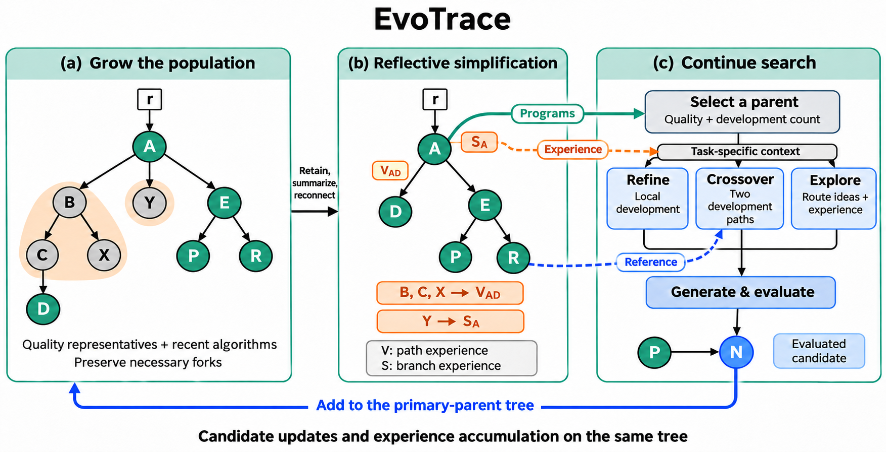
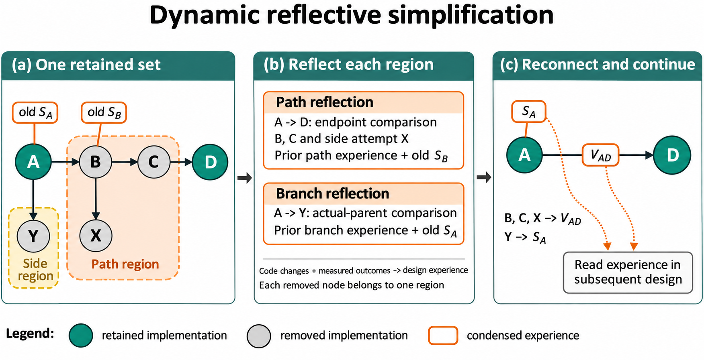

当前V2框架。保留集合共同决定结构简化与经验交接，更新后的树提供程序与任务相关经验。
当前V2反思简化。B、C及X共同进入V_AD；Y与旧S_A合并，旧S_B随路径交接。
历史机制图（2026年11月13日）。此页保留修订前原稿。旁支归属、时钟及跨路线读取与当前V2存在差异；当前规则见V2正式设计。
 历史整体架构。一棵持续演化的种群树作为主视觉；局部放大展示经历到经验的转换，树的三类视图与经验共同支持下一次设计。
历史整体架构。一棵持续演化的种群树作为主视觉；局部放大展示经历到经验的转换，树的三类视图与经验共同支持下一次设计。
点击上方标签切换机制；放大后可横向移动查看细节。